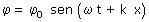
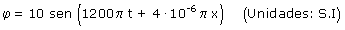
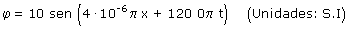

|
En el enunciado de este problema se omite mucha información que tendremos que suplir a base de imaginación. Para empezar, ¿cual es la perturbación que propaga la onda?, solamente se sabe que el valor máximo de esta es 10 de lo que sea (Medido en unidades S.I). Como la velocidad de propagación es igual a la de la luz posiblemente se trate de una onda electromagnética. Tampoco sabemos la dirección y sentido de propagación de la onda así que supondremos que va por el eje x, en sentido decreciente. La ecuación de onda será de la forma:  El signo positivo en la fase indica que la onda se propaga en sentido de x decreciente Parámetros de la onda:
La ecuación de la onda será entonces:  También puede darse la ecuación de esta forma:  |